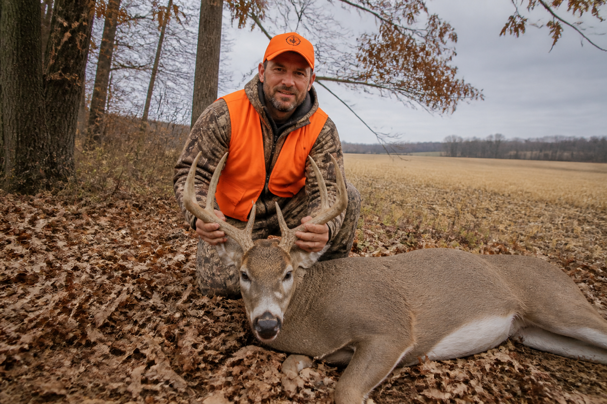
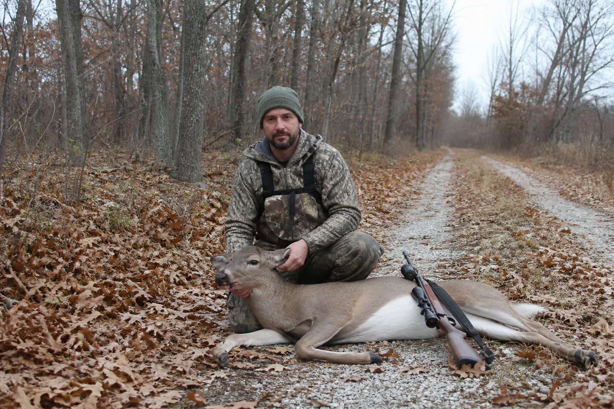

Ground clearing
Illustrative · Unsplash Midwest timber / field · not a tagged job


AIX Outdoors
Iowa farm and timber stills stand in for tagged closeouts. Captions are illustrative — not real AIX jobs. Harvest frames below are generated SAMPLE placeholders, not customers, not children, not live work.
SAMPLE · illustrative
Generated harvest stills until original photos arrive. Not AIX jobs. Not real customers. Adults only. Hero and service heroes stay land and equipment.


Illustrative · Unsplash Midwest timber / field · not a tagged job
Illustrative · not a tagged job

Illustrative · Mason City corn / farm rows · not a tagged job

Illustrative · not a tagged job

Illustrative · not a tagged job
Illustrative · not a tagged job
Illustrative · Unsplash rural dump truck / gravel lane · not a tagged job

Photography is a mix of Unsplash Iowa/Midwest land and generated SAMPLE harvest frames. None of these are AIX Outdoors closeouts or real customers. Cedar Rapids is outside the working radius.